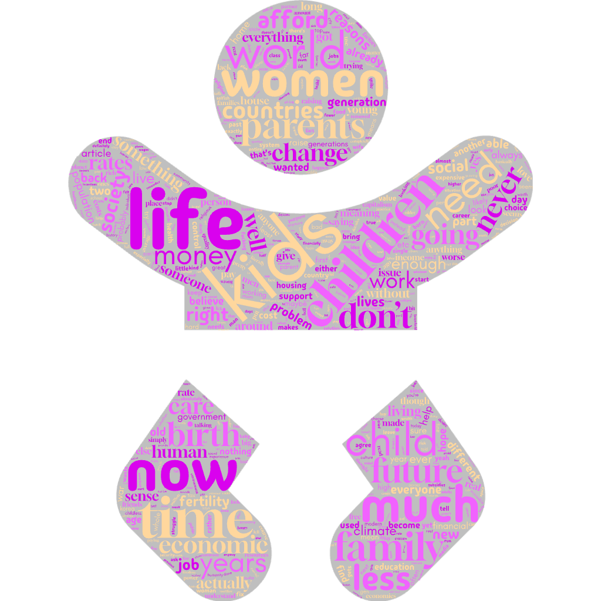

The Cost of Parenthood: Why a Generation is Saying No to Having Kids
In 1960, women in the U.S. had, on average, 3.6 children. In 2023? That number dropped to just 1.62—far
below replacement levels. Why are people choosing not to have kids, despite financial incentives and
policy efforts? This blog dives into the reasons behind the decline in birth rates, with insights
gathered from Reddit discussions about personal, financial, and societal concerns.
Data Analysis: The Numbers Behind the Perceptions
Using data from a Reddit discussion on the topic, I analyzed over 2,000 comments to uncover the primary
reasons people are choosing not to have children. Below, you can explore some visualizations summarizing
these insights.
Most Common Reasons for Not Having Children
Key Insights from Influential Comments
By analyzing comments with higher upvotes (greater social influence), we identified several recurring
reasons people cite for not wanting to have children:
- Personal Freedom (266 mentions):
Comments emphasize the desire for more time, career focus, and personal fulfillment rather
than dedicating life to raising children.
"I want to travel the world, chase my career, and focus on myself. Having kids would
just hold me back."
- Housing Issues (248 mentions):
The inability to afford a house or suitable living space is a significant barrier, especially
in areas with high real estate prices.
"How can I afford to raise a child when I can't even afford a decent home?"
- Financial Constraints (189 mentions):
The cost of raising a child, including education, healthcare, and daily expenses, is often
deemed unsustainable.
"The cost of raising a child in today's economy is outrageous. Between daycare,
education, and health insurance, it's more than I can handle."
- Pessimism About the Future (119 mentions):
Many commenters express a lack of hope or fear about the future, believing the world is
becoming a worse place for future generations.
"The world is falling apart—how can I bring children into a world that's so messed
up?"
- Climate Concerns (89 mentions):
Some commenters express worries about climate change and the environmental impact of having
more children.
"The environment is already stretched to its limits. I can't justify having a child
when we're destroying the planet."
- Societal Expectations (82 mentions):
Gender roles, societal pressures, and cultural norms are seen as restrictive and discouraging
for parenthood.
"Society expects women to become mothers, but I just don't feel that urge. It feels
like society wants to dictate my life."
Possible Interpretation:
- Financial and Housing Constraints Dominate: Economic factors such as financial
stability and housing affordability are the most significant barriers to parenthood, reflecting
systemic issues that disproportionately affect younger generations.
- Personal Freedom and Pessimism: A shift in generational values is apparent,
with more people prioritizing personal freedom, career growth, and life experiences.
Additionally, pessimism about the future and a sense of global instability are shaping attitudes
toward family life.
- Broader Global Issues Influence Decisions: Concerns about the environment,
especially climate change, and societal pressures are not only shaping individual desires but
are contributing to a broader societal trend where personal and global issues intersect.
Top Keywords from Reddit Comments

Insights from Word Frequency Analysis:
-
Top Words:
- a. Words like "people," "kids," "children," and "we" indicate a
focus on individuals and families, likely related to societal topics like fertility
rates, parenting, or generational concerns.
- b. Words like "dont," "just," and "its" suggest emotional or
conversational expressions, common in personal opinions and debates.
- c. Frequency of "more" and "so" indicates discussions likely
involve comparisons, evaluations, or calls for change.
-
Social Themes:
- a. Concerns about Children: Frequent mentions of "kids" and
"children" point toward discussions around family structures, child-rearing, and
societal issues impacting fertility or parenting.
- b. People-Centric Discussions: The word "people" reflects general
societal concerns, possibly addressing human behaviors, challenges, or generational
struggles.
Social Network Analysis
This visualization represents the relationships between Reddit comments, highlighting
the conversation flow and engagement. The key components of the network are explained below:
- Outer Circles:
- Representation: The outer circles represent the top 50 parent comments
in the Reddit discussion, ranked clockwise by degree centrality (the number of direct
connections a comment has).
- Size: The size of each circle is scaled relative to the number of
upvotes it received. Larger circles indicate more upvotes.
- Reply Nodes:
- Positioning: The reply nodes (smaller circles) are placed along the
connecting lines between the parent circles and the center.
- Higher upvotes: Replies with higher upvotes are positioned closer to
the outer parent circle.
- Lower upvotes: Replies with fewer upvotes are placed closer to the
center.
Hover over the circle and nodes to see the content of the comment and their
upvotes°ree centrality in tooltips!
- Uses and Gratifications Theory (UGT) helps us understand why Reddit users
engage with specific comments and discussions by fulfilling their psychological needs. In
the context of the Reddit discussions on parenthood, users often seek emotional validation,
particularly when facing concerns about financial instability, climate change, and societal
pressures. For instance, comments that express fear about bringing children into a world
facing economic and environmental crises attract individuals who share these concerns and
are looking for emotional support. These comments are likely to have high engagement, with
numerous upvotes and replies, as they provide validation to users' shared anxieties and
fears (Katz, Blumler, & Gurevitch, 1973). Additionally, comments offering information or
practical advice, such as managing finances while raising children, cater to users’ need for
knowledge and problem-solving. These informative comments attract users seeking guidance and
contribute to the development of a supportive network. Thus, UGT shows how emotional needs
and the search for information drive comment engagement and network centrality.
- Spiral of Silence Theory provides insight into the dominant opinions within
these Reddit discussions and how they influence user behavior. The theory suggests that
individuals are less likely to express dissenting views if they perceive their opinions as
being in the minority, leading to a spiral of silence where the dominant narrative becomes
even more amplified (Noelle-Neumann, 1974). In the context of Reddit discussions, this
dynamic is evident as the most upvoted comments often reflect the majority opinion on issues
such as the economic challenges of parenthood or climate change. These dominant opinions
attract more engagement, pushing alternative perspectives into the background. This creates
echo chambers, where dissenting voices are marginalized. As users upvote content that aligns
with their beliefs, these echo chambers reinforce certain viewpoints, suppressing contrary
opinions and creating a more homogeneous conversation. Thus, the Spiral of Silence theory
helps explain the social dynamics in online discussions and the amplification of majority
views.
References:
Katz, E., Blumler, J. G., & Gurevitch, M. (1973). Uses and gratifications research. Public
Opinion Quarterly, 37(4), 509-523.
Noelle-Neumann, E. (1974). The Spiral of Silence: A Theory of Public Opinion. Journal of
Communication, 24(2), 43-51.
Influential Comments with High Upvotes
Social Perceptions of Parenthood
From personal freedom to climate change concerns, here’s a closer look at the social perceptions
surrounding parenthood.
Freedom vs. Responsibility
"One user noted, 'Not having kids because it’s too much work is way better than neglecting them.'
This reflects a shift in how people prioritize self-fulfillment over societal expectations."
Pessimism About the Future
"‘We’re killing the planet as it is,’ wrote one commenter, expressing concerns about overpopulation
and environmental collapse. Many view the future with uncertainty, making the idea of parenthood
less appealing."
Cultural and Gender Norms
"Using parental leave is still seen as a career disadvantage, leading women to delay or forgo
childbirth, particularly in countries with intense work culture pressures like South Korea."
The Bigger Picture: Social and Economic Trends
This issue is not unique to Reddit users—it's a global trend. From policy effectiveness to the broader
impact of climate change, here’s how these factors play into the decision to have children.
Declining Birth Rates Globally
Countries like Japan and South Korea are facing some of the lowest fertility rates in the world, with
projections indicating severe population declines. This trend underscores the importance of
understanding why fewer people are opting for parenthood.
Policy Ineffectiveness
Despite generous family policies in Nordic nations, birth rates remain low. This suggests that while
financial incentives help, they are not enough to tackle the deeper concerns many individuals have
about raising children in today's world.
Climate Change and Anti-Natalism
The fear of environmental collapse is becoming a significant factor in the decision to forgo
parenthood. Many young people view having children as a risk to future generations in the face of
growing ecological challenges.
Financial Insecurity
Rising housing costs, student debt, and job instability make it difficult for young people to imagine
raising children. As one Reddit user put it: ‘The economy isn’t working for us, and it’s getting
harder to envision a future where having kids is an option.’
Conclusion: A Complex Crisis
From financial struggles to existential dread, the reasons behind the decline in birth rates are
multifaceted. Is this a crisis—or a rational response to the challenges of modern life? The future of
parenthood is uncertain, but it’s clear that economic, cultural, and environmental factors will continue
to shape the way people approach family life.